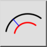

이것은 자동 번역입니다.
동심원(거리 포함)
도구 모음 / 아이콘:

메뉴:
그리기 > 아크 > 동심원(거리 포함)
바로 가기:
A, C
명령:
arcconcentric | ac
설명
이 도구를 사용하면 기존 호로부터 주어진 거리에 하나 이상의 동심 호를 만들 수 있습니다.
사용법
옵션 도구 모음에 원래 기준 호로부터 동심 호의 거리를 입력합니다.
옵션 도구 모음에 만들 동심 호의 개수를 입력합니다.
기준 호를 클릭합니다. 동심 호는 기준 호를 클릭할 때 마우스 커서가 위치한 쪽에 만들어집니다.